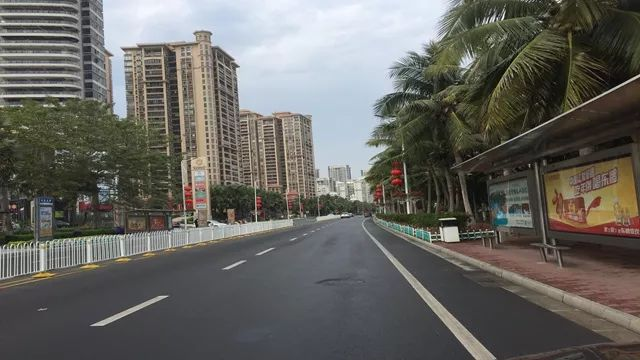

湖北抗击肺炎疫情这一周：防控措施如何升级
原文链接 备份链接 【财新网】（记者 张帆）1月24日中午12点左右，作为疫情爆发中心地的湖北省姗姗启动重大突发公共卫生事件一级响应。而在此之前，从1月23日起，已有浙江、广东、湖南、北京、上海、天津、安徽、重庆、四川等多个省份启动一级 …
27.01.2020

本文字数：2907，阅读时长大约5分钟
导读：此次肺炎病毒毒性没有非典强但是传播力特别强，所以要想尽早恢复平安就要听从政府安排。
作者 | 第一财经 林春挺 李溯婉
每年春节前后，有许多外省车主自驾从广东湛江徐闻，再坐轮船过海上海南岛，但这一切因为武汉爆发的新型冠状病毒肺炎疫情而发生变化。
有传言称，近日有上万从武汉及湖北地区来的车主，因被海南拒绝上岛而滞留在广东湛江。第一财经记者无法从官方求证到真实的数量，不过从多方面求证到，无论是海南还是广东湛江，都加强了防控。
几天前，在海南工作的陈月明打算乘飞机回武汉老家过年，但上了飞机之后，他就被请了下来。
经过一系列的检查，折腾了一天之后，陈月明终于顺利回到了武汉。”他对第一财经记者说，“这也是非常时期的非常做法，是正确的做法。”
自武汉发生肺炎疫情以来，截至1月26日7:00，海南省累计报告新型冠状病毒感染的肺炎确诊病例22例，其中重症病例1例，无死亡病例和出院病例。
与海南只隔一湾浅浅海峡的广东，截至1月25日24时，广东省累计报告新型冠状病毒感染的肺炎确诊病例98例，其中湛江4例，在重症病例中，湛江有1例。
根据海南官方此前公布，海南首例患者来自武汉。同样，广东首例确诊患者此前曾去过武汉。
为打好这场疫情防控战役，几天前，海南开始把关口前移，严把机场、车站特别是轮渡码头的入岛关口，与湛江海安等地加强联系协作，加强入岛人员体征监测。


“非常时期不能只想着自己”
和陈月明不同，和往年一样，来自武汉的李佳霖一家8口（他们一家四口加上父母、公婆）今年都在海南过年。几年前，他们在海南买了房子，所以这几年每年在海南过年。
对于李佳霖全家人来说，这一年过得非同寻常。“我们8口人除了3岁小儿子没有电话以外，所有人都接到了来自各个渠道包括社区卫生防疫站、小区物业等的问询和关心，记录我们到达海口的时间，今天早上还有四位卫生防疫人员到家里给我们测量体温等，都是正常的。”1月26日，李佳霖在接受第一财经记者采访时说。
1月25日，海南省新型冠状病毒感染肺炎疫情防控工作指挥部发表的《致有武汉旅居史的来琼人员的一封公开信》提出倡议，有武汉旅居史的来琼人员及时到所居住生活的政府部门（街道、乡镇）报备相关信息。
根据公开信，自今年1月10日以来，有武汉旅居史的来琼人员，要填报来琼的时间、车次（车牌、航班号）、车厢及座位号和手机号码，近期（抵琼后14日内）大致活动范围和接触人员范围。同时，要及时帮助随行的老人、未成年人、障碍人士提供上述信息，并及时通知同行人员。
同在1月25日，海南省疾控中心向海南全省人民及所有在琼旅客发布公开信，主题为防控新型冠状病毒感染的肺炎，提醒武汉来琼及有相关接触史的人员及时联系所在街道（乡镇）社区（村委会）、单位或入住的酒店等，主动登记联系方式。
同一天，海口市新型冠状病毒感染肺炎疫情防控工作领导小组办公室发布公告称，自2020年1月25日12时起，对来自湖北尤其是武汉的过海登岛旅客进行集中医学观察14天，集中医学观察地点为海口市海秀西路46号海南兵工大酒店，集中医学观察期间旅客只能在酒店范围内活动，严禁离开酒店。”
“大过年的他们也都在岗位上没办法跟家人团聚真的很辛苦。所以我们都很配合工作。”对于海南的做法，李佳霖表示理解和支持，“海南的做法非常妥当，我有许多医生朋友，每天看到他们发布的科学的疫情信息，非常清楚这个疫情要想从人间消失只能靠严格的隔离，切断一切传播途径。”
李佳霖通过自己的医生朋友了解到，此次肺炎病毒毒性没有非典强但是传播力特别强，所以要想尽早恢复平安就要听从政府安排，为了自己的生命和更多人的生命，什么困难都可以克服。
和李佳霖一样，刘小姐是土生土长的武汉人，1月21日去新加坡旅游，现在回国，由于武汉进不去，不得不改飞广州，打算在广州自我隔离一段时间。她们在网上定民宿，本来都谈好了。但到了广州，对方听说她的户口是武汉的就拒绝了。
谈及武汉人在外地的情况时，李佳霖说：“我自己是站在医疗的角度看待这些问题所以完全没有感受到歧视，这个不存在歧视，可能仅仅是外地人对武汉病毒源的恐慌，非常可以理解。我的家人有点感觉‘特殊’会说‘我们现在被监控了’这样的话，这时候，我都有跟家人说不要这样理解，非常时期不能只想着自己。”
“非常时期不能只想着自己”的还有海南本地人。第一财经记者在海南采访时发现，1月26日，正是大年初二，但在海南不少地方，人们纷纷主动取消了走亲访友的活动。
“现在是非常时刻，我们来年再聚。”海南一位本地人说，“今年我们选择宅在家里。”
武汉人员滞留湛江，本地人取消“回外家”
住在广东湛江金沙湾小区60多岁的郭老太太，早已准备好满满一冰箱的海鲜，等待女儿及女婿今天“回外家”。“回外家”是湛江地区的一个风俗，嫁出去的女儿一般都会在初二这天带姑爷回娘家。
不过，今年情况比较特殊，郭老太太的女儿、女婿临时取消“回外家”。不只是郭老太太这一家出现这种情况。湛江地区众多市民都纷纷取消走亲访友的活动，呆在家里进行自我隔离。
大年初一的一大早，湛江市委书记、市防控工作领导小组第一组长郑人豪到市疾控中心、市卫健局看望慰问疫情防控一线工作人员，深入了解新型冠状病毒感染的肺炎疫情防控工作。
不过，令湛江市民更担心的是，大量从武汉来的“不速之客”汇聚于此。在湛江工作的黄先生今日接受第一财经记者采访时谈到，身边的亲朋好友初二“回外家”的活动全部取消了，街道非常冷清，多家酒楼茶楼跟停业差不多。

据湛江官方发布的消息，截至1月24日18时， 湛江市报告确诊2例（其中1例病毒核酸检测转阴)，疑似5例。7名患者均是武汉返湛人员，其中4名男性分别为79岁、26岁、25岁、24岁，3名女性分别为77岁、67岁、25岁。目前，3名收治在广东医科大学附属医院、2名收治在湛江中心人民医院、2名收治在廉江市人民医院。

湛江下属雷州市防控中心呼吁市民，如果市民在雷州城区、镇区或农村发现湖北武汉（鄂A）的车辆，请记下车牌号并立即拨打雷州市新型肺炎防控指挥中心的电话，以便该防控中心及时派员跟进。第一财经记者按告示上电话拨打，接电话的工作人员称，这几天确实有不少鄂A的车辆经过雷州境内，已陆续接到一些市民的举报电话。
和海南海口一样，湛江市徐闻县新型冠状病毒感染肺炎疫情防控工作领导小组办公室也在1月25日发布告示称，自1月26日12时起，对来自湖北尤其是武汉的从海南过海途经徐闻的旅客进行集中医学健康观察14天，地点在徐闻徐海大道华通酒店，集中医学健康观察期间，旅客只能在酒店范围内活动，严禁离开酒店。不过，该告示上的咨询电话以及华通酒店的电话一直处于占线状态，第一财经记者截至发稿时无法打通。
此外，有朋友圈在转发的消息称，对停留在徐闻急需入住的武汉朋友，请大家指引他们至海安镇海楼（海关培训基地）和华通酒店免费入住，并请相关部门及时发布湛江各县市定点住宿单位。“降温了，外面下着雨呢，让武汉同胞在异乡先解决温饱，才能战瘟疫。”
广东粤东一乡镇干部告诉第一财经记者，从除夕开始，他们所在的地区开始排查从武汉来的人员，包括在武汉就读的学生，并为这些人准备了安置点，配备了医护人员监测身体状况。
【推荐阅读】
UP主实拍：“空城”武汉的物价、交通 、生活状态


原文链接 备份链接 【财新网】（记者 张帆）1月24日中午12点左右，作为疫情爆发中心地的湖北省姗姗启动重大突发公共卫生事件一级响应。而在此之前，从1月23日起，已有浙江、广东、湖南、北京、上海、天津、安徽、重庆、四川等多个省份启动一级 …
原文链接 备份链接 17 年前的那场公共卫生危机，未能及时公开疫情成为事后被诟病最多的问题之一，也成为中国疾病防控系统以及政府信息公开等许多方面的重要转折点。 而多年后，越来越多的互联网官方渠道成为了重大事件的定海神针，「官宣」被普遍接 …
原文链接 备份链接 27.01.2020本文字数：1285，阅读时长大约3分钟 导读：“请大家高度重视，都不要走亲串友，更不能让外人来我们村走亲戚，避免病毒交叉感染。” 作者 | 第一财经 邵海鹏 编辑 | 冯一龙 武汉疫情牵动着国人的 …
原文链接 备份链接 【财新网】（记者 黄蕙昭）从全国看，疫情还处于早期散发阶段。国家卫健委主任马晓伟在1月26日下午国务院新闻办举行的发布会上表示。截至1月26日20时，中国确诊新型冠状病毒肺炎病例2058例，其中湖北1052例，而非湖 …
原文链接 备份链接 武汉各大医院发热门诊的紧张态势已有一周，七家定点医院启动才两天已被压到极限。 武汉不缺顶级医院，不缺顶级专家，不缺顶级医疗能力，缺的是公共卫生防控能力、行政效率和疫情处理流程。 在患者和大医疗机构之间，未见到基层 …